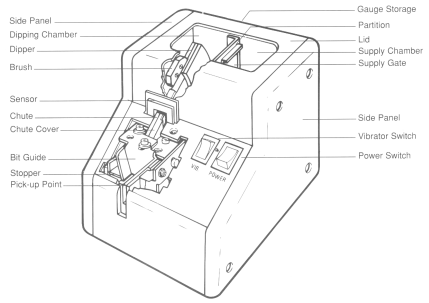
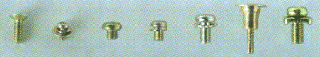

| Pick Up and Drive Screws 37% Faster | |
|
Available in standard, and flathead and robotic models for special applications; the ASG Nejicco screw feeder series are simple… operators can become experts in less than 10 minutes. Simple Operation, Small Price Best of all, ASG screw feeders are simple... operators can become experts in less than 10 minutes. And, at a cost of about 1/10 of a conventional bowl feed system, it's a feeder any assembly operation can afford. Features:
Standard and Flathead units are fully automatic; operators dump loose screws into hopper, dipper scoops them out, aligning them "heads up" in the feeder chute. Operator then simply presses the magnetized bit of a screwdriver into the bit guide and snaps up a screw. The fastening motion is completed in just 2.5 seconds. Studies recently conducted on 8-32 x 3/8" screws show this to be 37% faster than conventional shaker box methods. Robotic units are also fully automatic; specially designed for robotic applications. ASG screw feeders also help reduce damage to workpieces . They are lightweight (2.5 Ibs.), easy to move and require little space on work tables or assembly lines. The units are small enough that several feeders can be used at a single workstation for quick pick-up of different screw types and sizes. They are ideal for any production operation. |
|
| ASG screwfeeders accept these screw head styles | |
|  | |
| Precision Screw Feeders Standard Interchangeable Rail Models | |
| The Ultimate in Versatility! Handles #000 to #10 Screws; Even with Washers | |
|
ASG presents the most flexible screw feeder available, the Quicher. No longer will you have to buy multiple dedicated-size, screw feed devices. The Quicher can handle a huge variety of fastener sizes and types simply by plugging in its interchangeable rails. Operation is simple. Screws are poured into the hopper, automatically lined up and presented for pick-up at a rate of up to two per second. The flat, horizontal rail design keeps screws from getting stuck. Feeds all these types of screws: |
|
| General Specifications | |
|
|